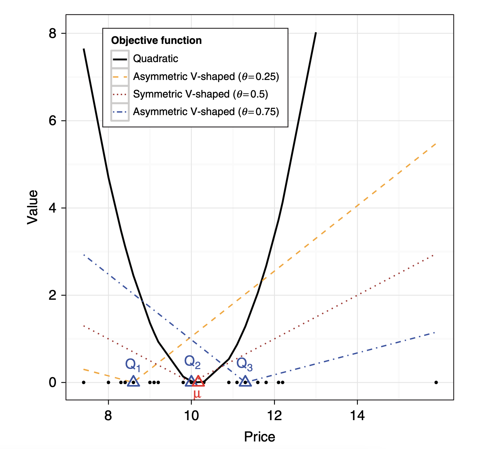
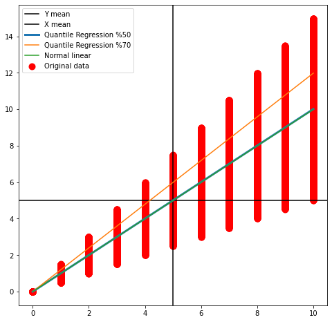
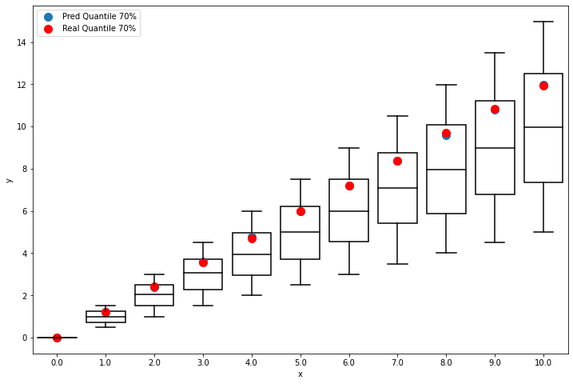
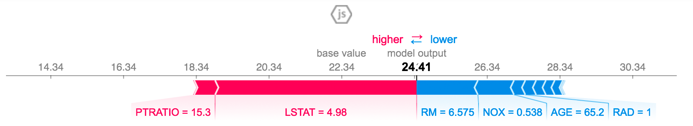

Diego Kiedanski
2 de Agosto 2021
Automatización
Recomendación
Hay varias herramientas que podemos usar para mejorar la explicabilidad de una predicción
| Variable | Valor |
|---|---|
| Cuartos | 4 |
| Barrio | Centro |
| Calidad | Buena |
| Area | 100m2 |
| Demanda | Alta |
\[ MSE = \min_u \sum_{i=1}^{N \times K} (y_i - u)^2 \]
\[ MAE = \min_u \sum_{i=1}^{N} | y_i - u | \]
\[ PINBALL_{\tau} = \min_u \sum_{i=1}^{N \times K} \varrho_{\tau}(y_i - u) \] \[ \varrho_{\tau}(z) = z \times (\tau - \mathbb{1}_{\{ y < 0 \}}) \]

La idea es simple: usar pinball como objectivo a minimizar.


El Shapely Value es el promedio de las contribuciones marginales de cada jugador.
\[ {\displaystyle {\begin{array}{|c|r|} {\text{Orden de llegada}}\,\!& \text{Contribución Marginal (1)}\\ \hline {1,2,3}&v(\{1\})-v(\varnothing )=0-0=0\\ {1,3,2}&v(\{1\})-v(\varnothing )=0-0=0\\ {2,1,3}&v(\{1,2\})-v(\{2\})=0-0=0\\ {2,3,1}&v(\{1,2,3\})-v(\{2,3\})=1-1=0\\ {3,1,2}&v(\{1,3\})-v(\{3\})=1-0=1\\ {3,2,1}&v(\{1,3,2\})-v(\{3,2\})=0-0=0 \end{array}} } \]
Calculamos el valor que le corresponde al jugador 1 como el promedio:
\[ \phi_1(v) = \frac{0 + 0 + 0 + 0 + 1 + 0}{6} = \frac{1}{6} \]
Por simetría, a 2 le corresponde lo mismo y por tanto, a 3 le corresponde
\[\phi_3(v) = 1 - \frac{2}{6} = \frac{4}{6}\]
Es una biblioteca que calcula shapley values para varios modelos:

Esto es un parrafo que queda subrayado